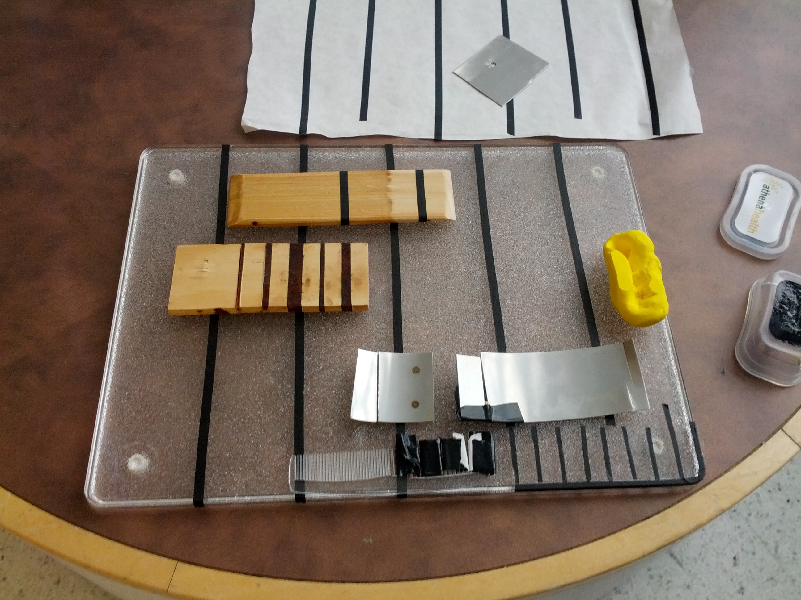
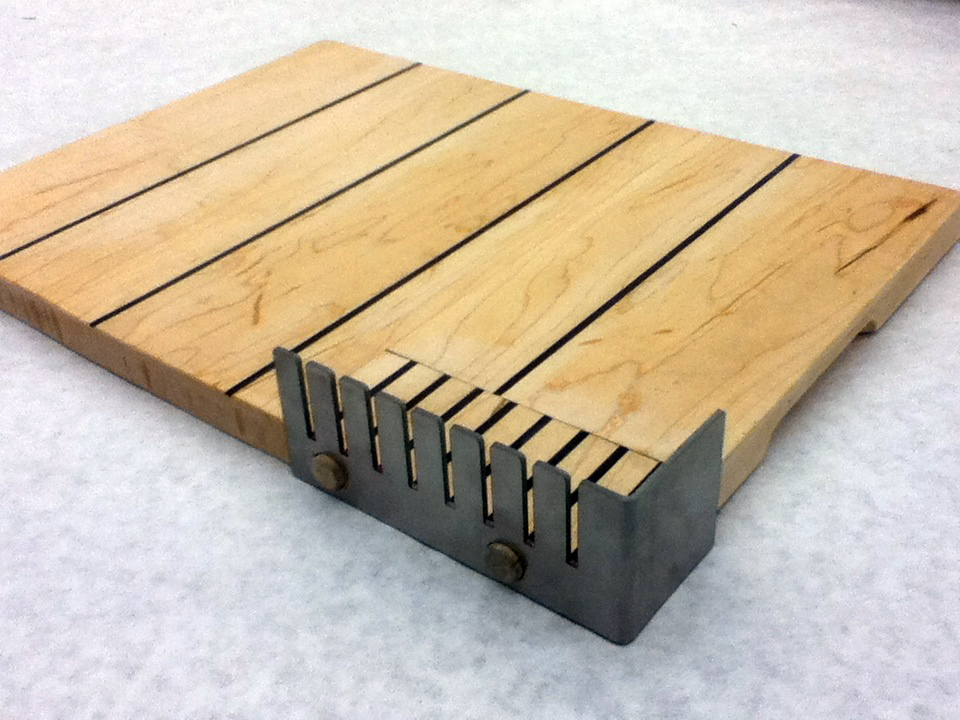
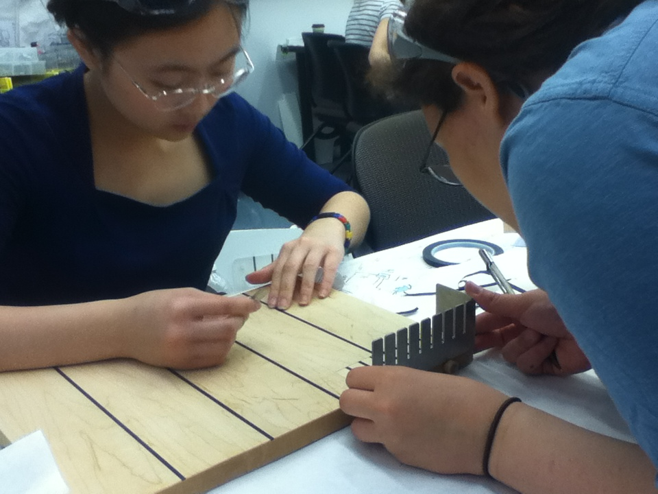
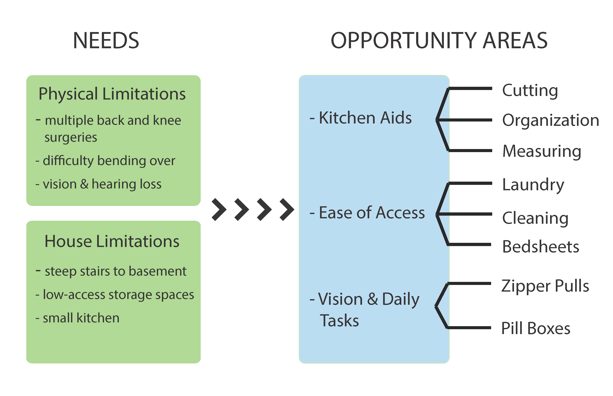

- 
- 
- 
- 
-

Kitchenware for Low Vision
John and Lauren, an older adult couple living in the suburbs of Boston, count themselves lucky for everything they have. Through shared meals, conversation, and being put to work around the house, our 3-person team worked with them to identify and prioritize ways we could help them continue to age in place. With multiple back and knee surgeries each, there were plenty of challenges in the built environment. But maintaining their ability to cook and host were the key to maintaining their happiness, not doing chores around the house. So we focused on kitchenware that anyone could use, especially Lauren. Lauren's deteriorating vision due to macular degeneration was slowly, but surely forcing her out of "her kitchen, her kingdom." We designed and tested a cutting board for both Lauren's current situation, as well as the worst case scenario-- blindness and living alone.
Function Testing
Using paper models and tape, we quickly learned both about the subtleties of Lauren's vision and the usage context. Some key resulting product requirements included:
- flat surface for cutting dry foods (bread and fruit)
- simple, clear reference lines to find an object in space
- easy to clean
- easy to store
Interaction & Character Testing
The board had to fit naturally in her kitchen, so we worked hard to produce professional-quality finish and adhered closely to her family-ingrained fondness for wood cutting boards.
In-home User Testing
Before manufacturing our final prototype, we deployed a high-fidelity prototype to Lauren's kitchen for a week. Her comments on the large print interaction log confirmed its use, but pointed us to the improve details from finger grooves to fit and finish.
Product Features
Minimalist white maple cutting board with black inlay
Finished with tung oil (food-safe)
Removable aluminum cutting guide for butter
Easy to clean with sponge
Comfortable grooves for handling
Non-slip rubber feet
Dimensions: 15" x 12" x 1"
Project Info
- Team Size: 3
- Collaborators: John and Lauren Debeck (pseudonyms)
- Spring 2014
- PDF not available